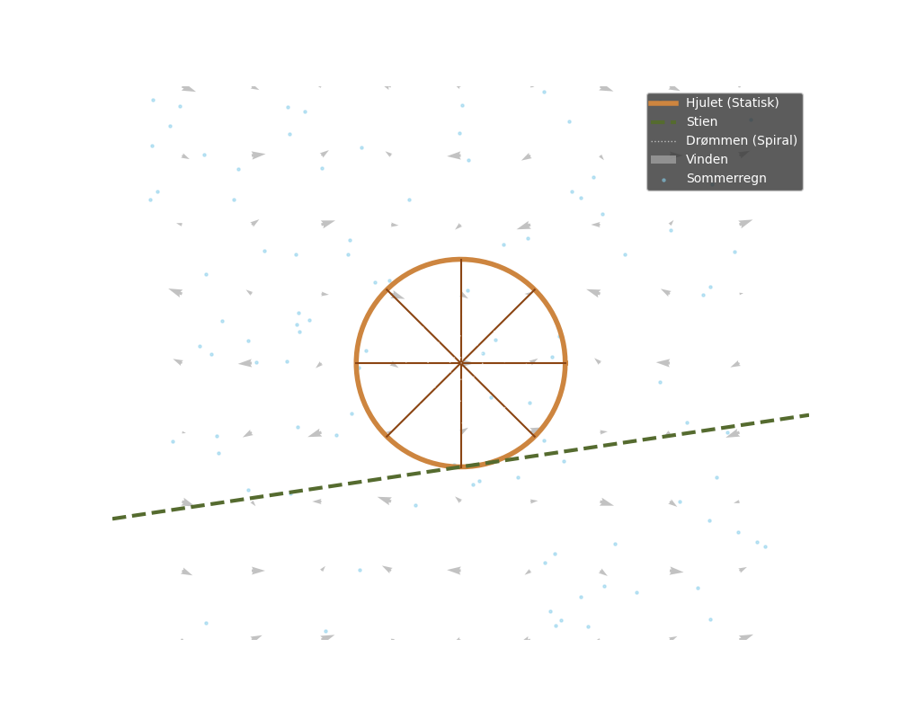

En rusten sykkel ved en sti, drømmer om å være fri. Vinden hvisker, hjulet står, mens sommerregnet stille går.

import matplotlib.pyplot as plt
import numpy as np
# Definer output-path
output_path = "dikt_visualisering.png"
# Opprett figur og akser
fig, ax = plt.subplots(figsize=(10, 8))
ax.set_facecolor('#2F4F4F') # Mørk bakgrunn (stormfull/vind)
# Parametere
t = np.linspace(0, 2 * np.pi, 100)
# 1. "En rusten sykkel ved en sti" - Representert som et statisk hjul (Sirkel)
# Sirkel for hjulet
r_wheel = 1.5
x_wheel = r_wheel * np.cos(t)
y_wheel = r_wheel * np.sin(t)
ax.plot(x_wheel, y_wheel, color='#CD853F', linewidth=4, label='Hjulet (Statisk)')
# Ekrer (Spokes) i hjulet
for angle in np.linspace(0, 2*np.pi, 8, endpoint=False):
ax.plot([0, r_wheel * np.cos(angle)], [0, r_wheel * np.sin(angle)], color='#8B4513', linewidth=1.5)
# 2. "Stien" - En lineær funksjon som skjærer gjennom
x_path = np.linspace(-5, 5, 100)
y_path = x_path * 0.15 - 1.5 # Let helning
ax.plot(x_path, y_path, color='#556B2F', linewidth=3, linestyle='--', label='Stien')
# 3. "Drømmer om å være fri" - En spiral som utvider seg utover (Flukt)
t_spiral = np.linspace(0, 6 * np.pi, 500)
r_spiral = 0.05 * t_spiral
x_spiral = r_spiral * np.cos(t_spiral)
y_spiral = r_spiral * np.sin(t_spiral)
ax.plot(x_spiral, y_spiral, color='white', alpha=0.6, linewidth=1, linestyle=':', label='Drømmen (Spiral)')
# 4. "Vinden hvisker" - Vektorfelt som visualiserer vind
X, Y = np.meshgrid(np.arange(-4, 5, 1), np.arange(-4, 5, 1))
# Vinden blåser mest langs x-aksen, men med litt turbulens (whispers)
U = np.cos(X + Y) * 0.5
V = np.sin(X - Y) * 0.2
ax.quiver(X, Y, U, V, color='#A9A9A9', alpha=0.7, scale=25, width=0.004, label='Vinden')
# 5. "Sommerregnet stille går" - Tilfeldige fallende prikker (Scatter)
rain_x = np.random.uniform(-4.5, 4.5, 100)
rain_y = np.random.uniform(-4, 4, 100)
# Regnet faller litt skrått på grunn av vinden
ax.scatter(rain_x, rain_y, marker='.', color='#87CEEB', s=20, alpha=0.5, label='Sommerregn')
# Estetiske justeringer
ax.set_xlim(-5, 5)
ax.set_ylim(-4, 4)
ax.legend(loc='upper right', facecolor='#333333', labelcolor='white', framealpha=0.8)
ax.set_title("Matematisk Representasjon: Sykkelen ved Stien", color='white', fontsize=14)
ax.axis('off') # Skjul akser for kunstnerisk effekt
# Lagre figur
plt.savefig(output_path, bbox_inches='tight', facecolor='#2F4F4F')execution_ok=True fallback_used=False image_ok=True